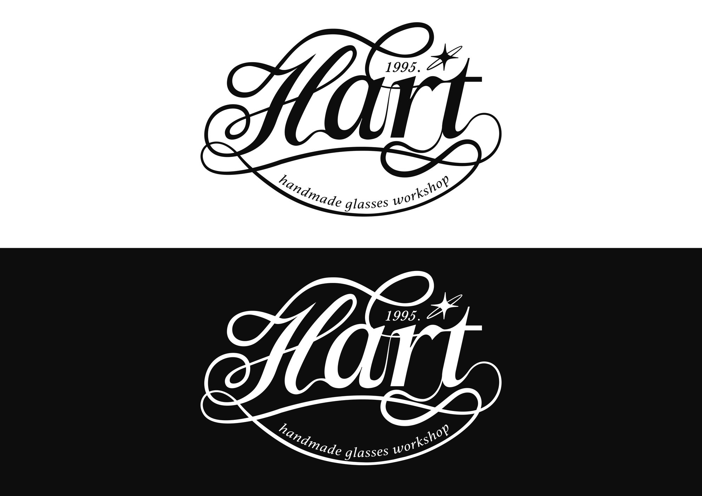
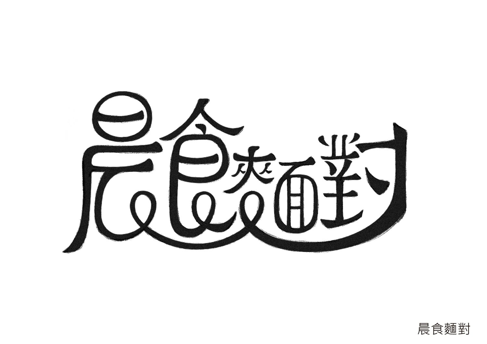
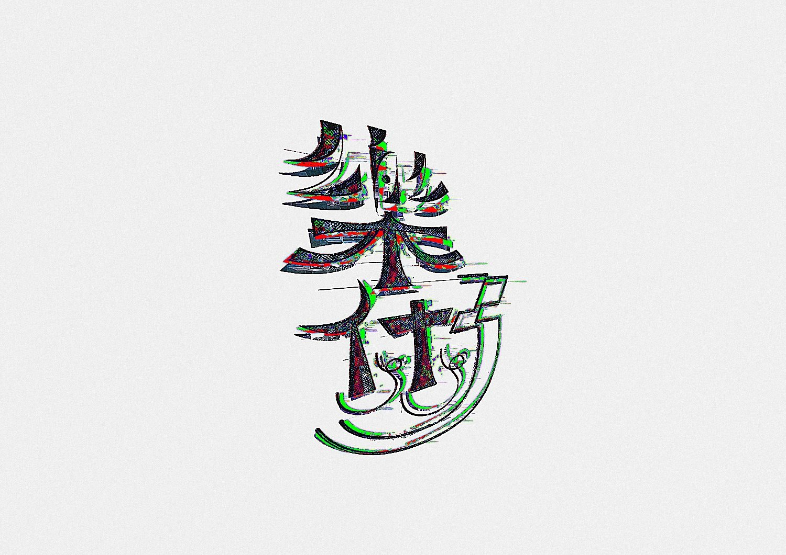

Typography is the design act closest to impulse. This collection spans brand lettering, type design experiments, ink calligraphy, and dark expressive pieces — each one a different reason to pick up the pen and push a character somewhere it's never been.
字型設計是最接近衝動的設計行為。這裡收錄的是不同時期、不同理由拿起筆的字型實驗——有的是品牌標準字，有的是自主練習，有的是一時興起的情緒出口。共同點是：每一件都把一個字推到它原本去不到的地方。
H'ART 的文字識別分兩條路走：一套是以電路迴路線為筆畫骨架的方塊字系統，每個字都是可以獨立成件的迷宮圖；另一套是以傳統 Script 書法為基底的英文標準字，1995 年的年份印記讓工作坊帶上手作工藝傳承的時間感。
H'ART's typographic identity runs on two tracks: a circuit-line Chinese character system where each glyph is a self-contained maze; and an English script logotype rooted in traditional hand-lettering, with the year mark 1995 giving the workshop the feel of a craft tradition with a timestamp.



以 @zhong_type0.0 為練習帳號的字型自主創作系列，以詞語本身的意涵驅動字形發展的方向——「消失Z跡」用消散的筆畫記錄 Z 世代的記憶；「秋老虎」把爆裂的筆畫做成一種液態的危險；「退伍令」讓字形在圓潤與刀鋒之間找到平衡；「山水海」把水墨的流動性用數位方式還原。
A self-initiated series under the practice account @zhong_type0.0, where each word's meaning drives its typographic form — 消失Z跡 (Disappearance Z-Traces) records Gen-Z memory in dissolving strokes; 秋老虎 (Autumn Tiger) turns explosive brushwork into liquid danger; 退伍令 (Discharge Order) balances rounded forms with sharp-edged authority; 山水海 (Mountains Waters Sea) restores ink's fluidity in digital form.


「肝火旺」以中醫術語為題，把字拆解成器官形態的幾何結構；「吃素的」嵌入鑽石星點，讓素食的清淡感帶上一點意外的光澤；「好劇好散」用現代高對比字型為「好的結局需要好的故事」下注解；「無效期限」把字分解成 CMY 印刷原色的幾何色塊；「太空博物館」用網點半調讓字和宇宙圖像融成一張票券。
肝火旺 (Liver Fire Blazing) deconstructs a TCM term into organ-shaped geometry; 吃素的 (Going Vegetarian) embeds sparkle diamonds to add unexpected luster to the lightness of plant-based eating; 好劇好散 (Good Plot, Good Ending) uses a high-contrast modern typeface to caption the idea; 無效期限 (Invalid Expiration) dissolves the characters into CMY primary color blocks; 太空博物館 (Space Museum) fuses characters and cosmic imagery into a halftone ticket.


「暴走蘿莉」讓筆畫爆炸成一個無法被辨認的密集生命體；「炙熱冷戰」把對立的情緒用紅與藍的 3D 色差分裂成兩種質感；「穿破」讓傳統書法的雲霧感被毛筆的力道切穿；「愛」把一個字拆成刺青圖騰的黑色節奏；「夜夜晃蕩晃」用螢光綠和噴漆感記錄夜裡漫遊的語感；「操!」把罵人的字做成最有設計感的藍色糖果。
暴走蘿莉 (Rampaging Lolita) explodes strokes into a dense, barely-legible organism; 炙熱冷戰 (Scorching Cold War) splits opposing emotions into red and blue 3D chromatic aberration; 穿破 (Pierce Through) lets traditional calligraphy's cloud-mist quality be cut through by brushwork pressure; 愛 (Love) deconstructs a character into tattoo-totem rhythm; 夜夜晃蕩晃 (Wandering Every Night) records nocturnal roaming in fluorescent green and spray-paint texture; 操! turns an expletive into the most composed blue candy.


這批作品都在黑色裡找到自己的位置：「光速閃退」用金屬死亡字體把逃避包裝成一種美學；「破防」讓防禦的崩潰變成一枚燃燒的盾徽；「再生」以過熱的光和廢墟感記錄重新開始的成本；「鮭女」把一個字拆解成黑底金紅的圖騰；「靈魂的黑夜」讓字在暗中燃燒成玫瑰色的輪廓；「路怒症」用最工整的版面說出最憤怒的事；「痕」讓兩個字在螢光綠的 glitch 裡留下痕跡；「萬夢」用紅色霓虹把一萬個夢疊進三個字。
Each of these pieces finds its own position in black: 光速閃退 (Speed-of-Light Exit) wraps avoidance in death-metal aesthetics; 破防 (Defenses Broken) turns defensive collapse into a burning heraldic shield; 再生 (Regeneration) records the cost of starting over in overheated light and ruins; 鮭女 (Sake Woman) deconstructs a character into a black-ground gold-red totem; 靈魂的黑夜 (Dark Night of the Soul) lets characters burn into rose-pink outlines in the dark; 路怒症 (Road Rage) says the most furious thing in the most composed layout; 痕 (Traces) leaves a mark in fluorescent-green glitch; 萬夢 (Ten Thousand Dreams) stacks ten thousand dreams into three characters of red neon.


